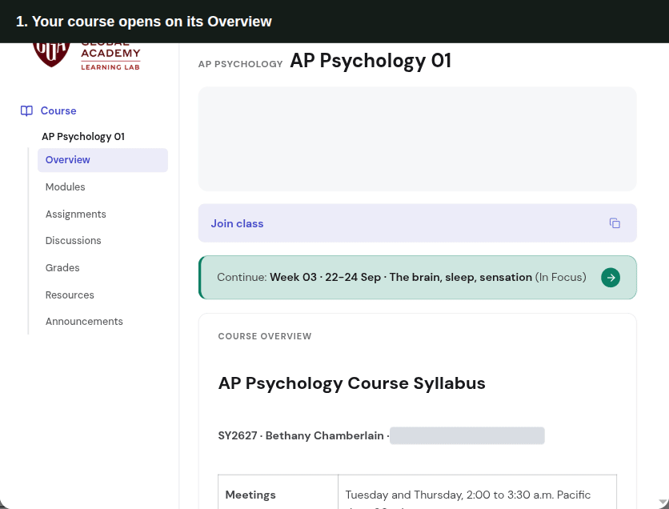
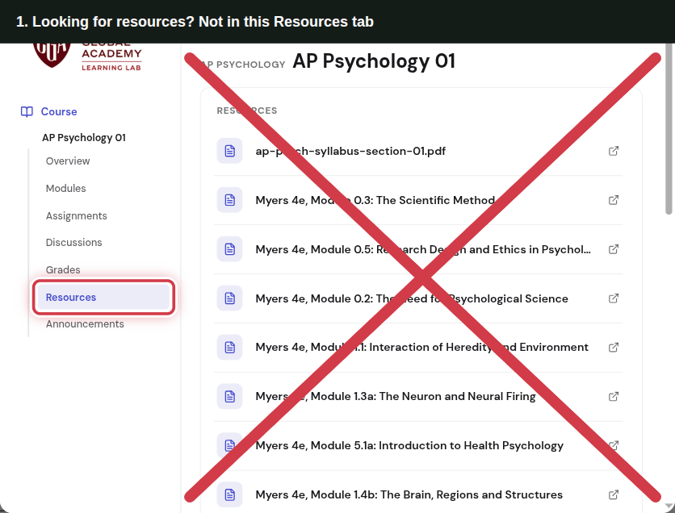
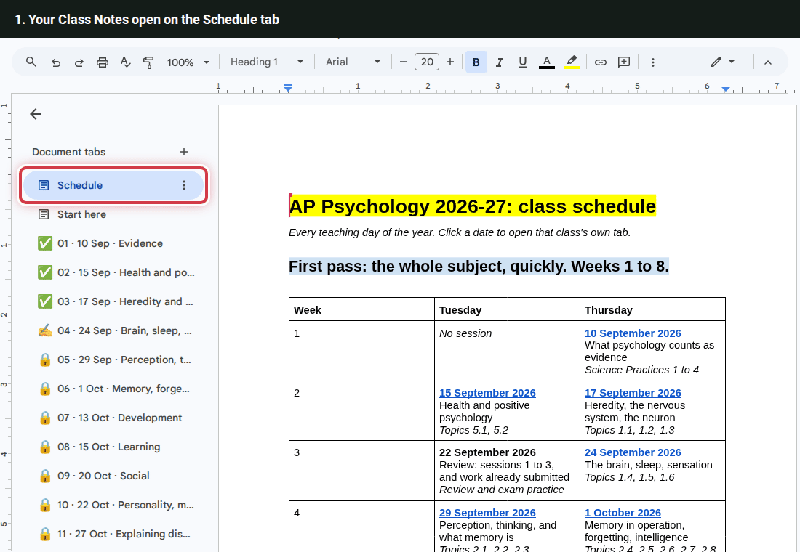
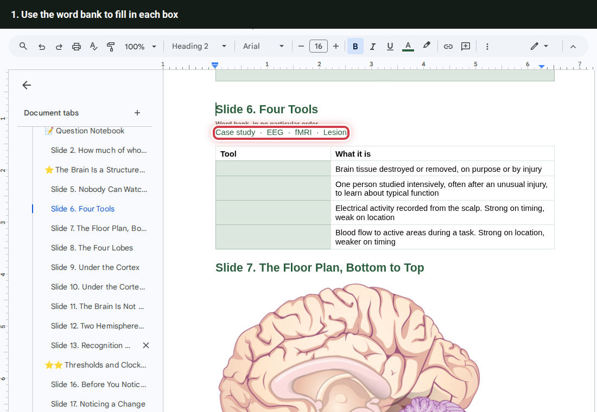
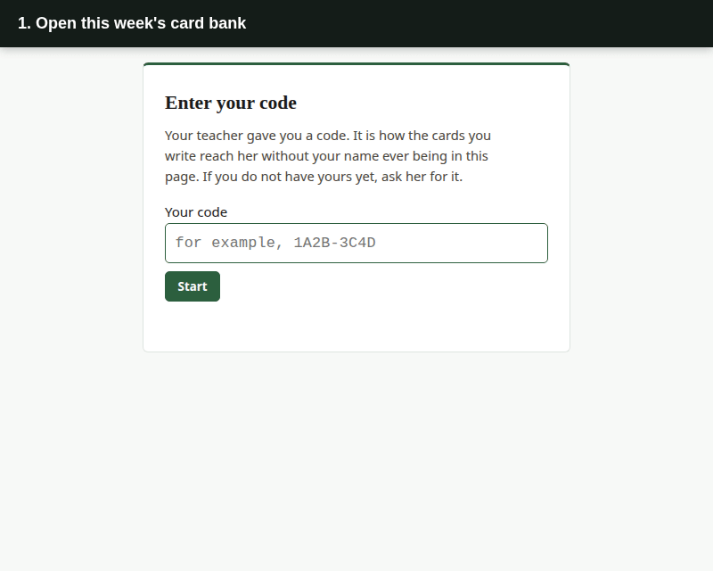
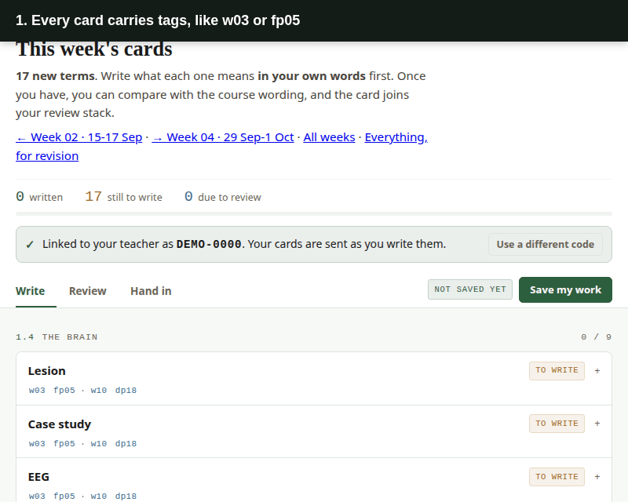
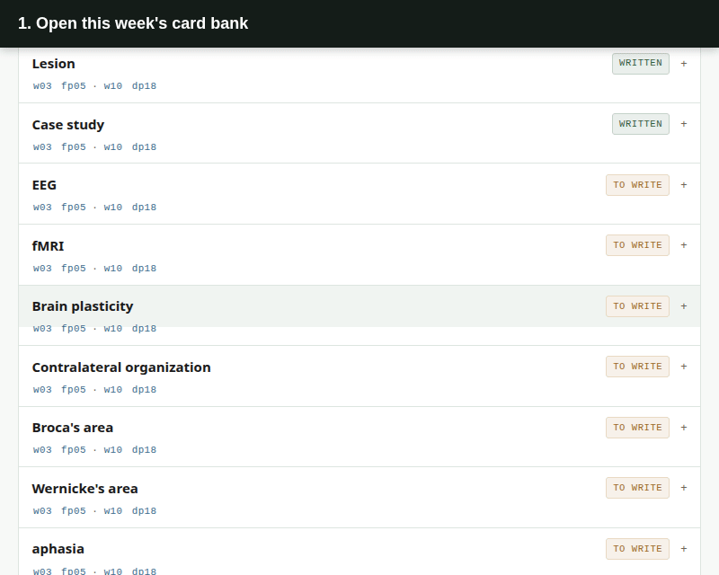
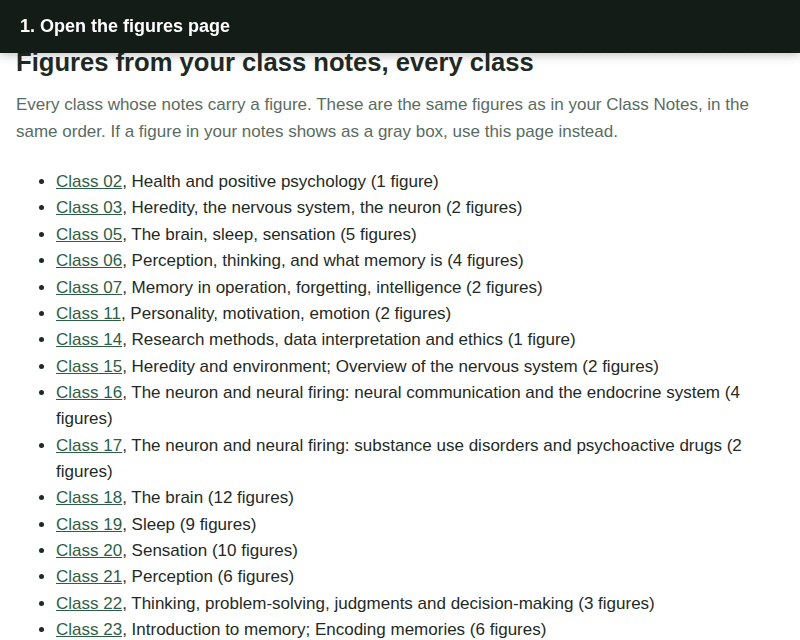

AP Psychology · How to
How to use the study pages
Each GIF loops. The red ring shows where to click, and the steps are written out underneath.
Find this week's work on the Learning Lab
Everything for a week lives in that week's module. The week you are in is marked In Focus, and Continue on the Overview opens it.

- Your course opens on its Overview
- Two ways in: Continue, or Modules in the menu
- Click Continue to open this week
- This week is open, marked In Focus
- Click an item to open it
- Click a week's title to open or close it
- Next week's work is ready to look at
Find the resources and the slides
Skip the Resources tab in the menu: it lists every file with no order. Go through Modules instead. Two modules sit above the weeks all year, Resources (the syllabus, the card banks, the glossaries) and Slides (the slides from each class), and each week's readings are inside that week.

- Looking for resources? Not in this Resources tab
- Go to Modules instead
- Resources: the syllabus, the card banks, the glossaries
- Slides: the slides from each class
- Each week's readings are inside that week
Find your way around your Class Notes
Your Class Notes are a Google Doc with one tab per class. A green check on a tab means it is ready. A padlock means it is not ready yet, so wait for the check.

- Your Class Notes open on the Schedule tab
- A green check means that class is ready
- A padlock means not ready yet
- Open one early and it asks you to wait for the check
- Click a date in the schedule
- Then click the tab name that pops up
- You are in that class's tab
- Click the tab again to see its sections
- Click a section to jump straight to it
- Hide the tab list to make room
- Bring it back with this button
Fill in your Class Notes
Type straight into the boxes. Even if you skip the rest, answer the last three questions of every class: what you would have gotten wrong, the one thing, and what you still do not get.

- Use the word bank to fill in each box
- Click the empty box and type
- Keep going down the table
- Everyone answers these last three, even if you skip the rest
- One sentence, in your own words
Write a card
Open the card bank for this week from the Learning Lab. Write each definition in your own words before you look anything up.

- Open this week's card bank
- Enter the code your teacher gave you
- Pick a term you have not written yet
- Type your own definition
- Save it
- Your card is saved
Find every card for one week or one class
Each card carries tags: w03 is the week, and fp05 or dp18 is the class number on your Class Notes tab. Click a tag to see every card with it.

- Every card carries tags, like w03 or fp05
- Click a tag to see it everywhere
- This is the all-year page, filtered to one tag
- Clear the filter to see every card again
- Every card is back
Review the cards you wrote
Review only shows cards you have written. Say the answer out loud first, then check it.

- Open this week's card bank
- Click Review
- Review shows the cards you wrote
- Say it out loud, then check what you wrote
- Grade yourself honestly
See the figures from your class notes
If a picture in your Class Notes shows as a gray box, the same figures are on this page, class by class.

- Open the figures page
- Pick your class from the list
- This class has its own figures
- Scroll down to find the one you need